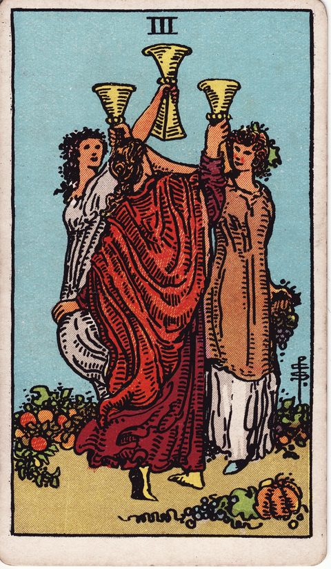
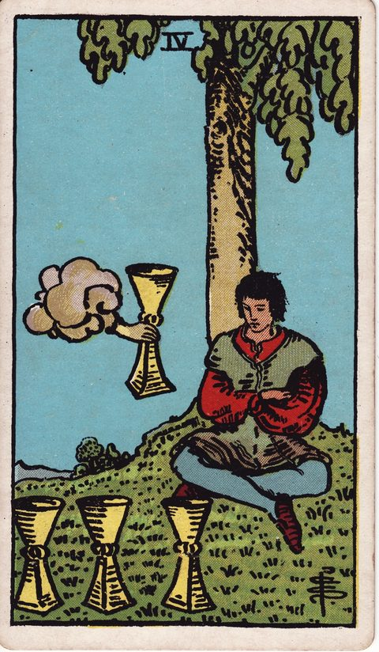
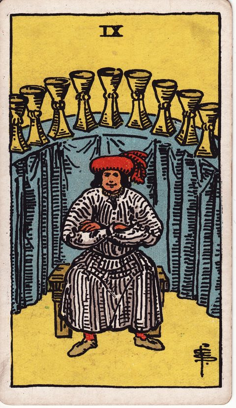
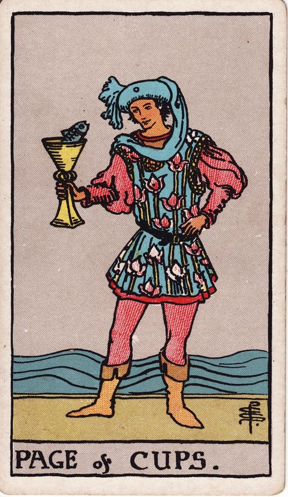
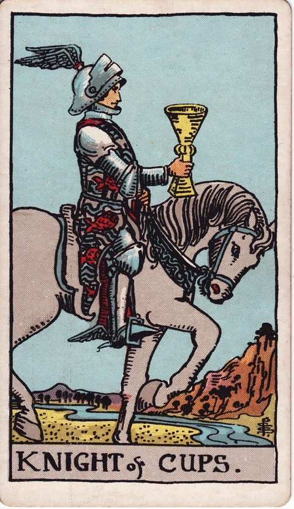
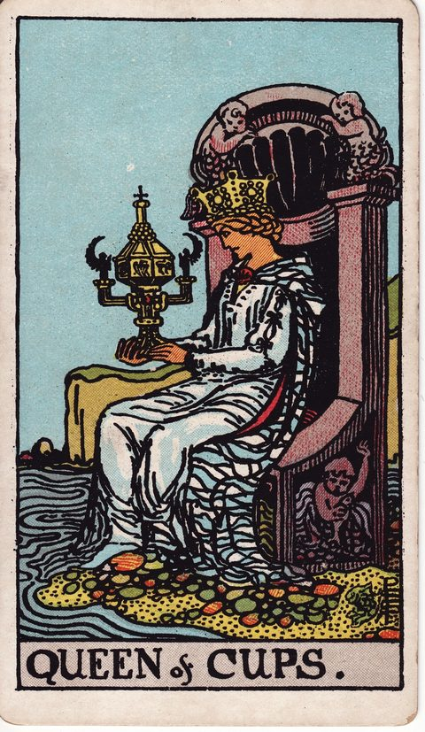
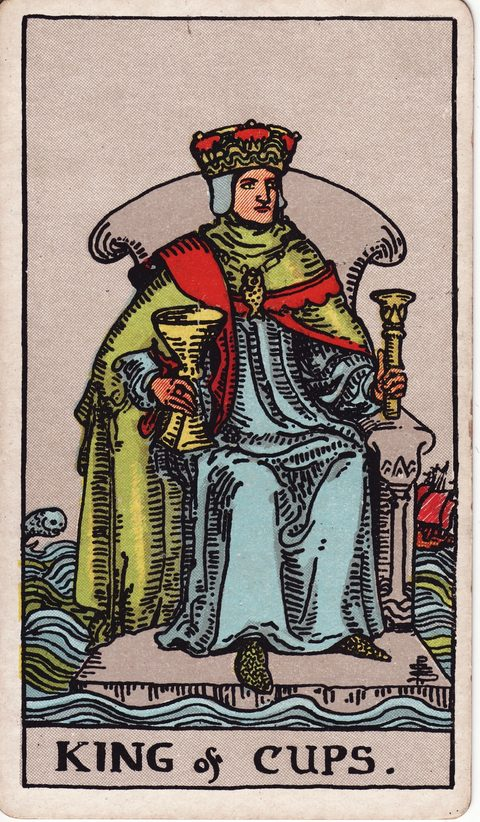

INDEX — CARDS & WORRIES
カード・悩み一覧
タロット78枚の意味と、12の悩み別ガイド
迷っていることに近いテーマから考え方を読むか、引いたカードの意味を調べられます。カードは未来の予言ではなく、見落としに気づくための問いかけです。
01 — BY WORRY
悩みから探す
近いテーマを開くと、迷いの正体・整理の視点・関係するカードが読めます。
WORK仕事・キャリア


LOVE恋愛・家族


LIFE暮らし・お金・人づきあい


02 — BY CARD
カードから探す














見つかりませんでした。別のことばで試してみてください。